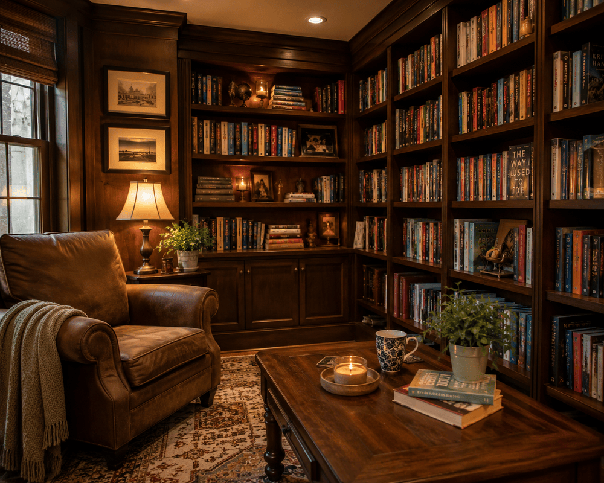
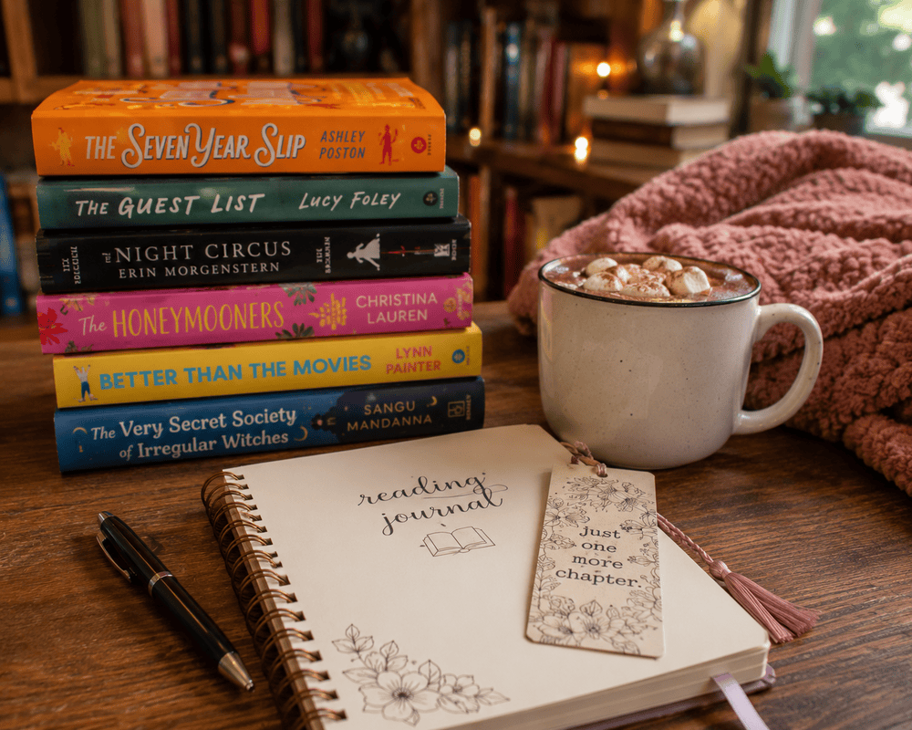

Welcome to the World of Reading
Reading is one of my favorite hobbies because it allows me to explore new ideas, experience different worlds, and enjoy stories without leaving home. Whether it's a fantasy novel, a murder mystery, or a historical biography, every book offers a unique adventure and a chance to learn something new.
AI Prompt: "Create a photorealistic cozy reading nook with a comfortable armchair, wooden bookshelves filled with books, warm lighting, a cup of tea, and an open novel resting on a small table."
Reading can be both entertaining and educational. It helps improve vocabulary, strengthens critical thinking skills, and provides a healthy way to relax after a busy day. Books can inspire creativity, teach valuable life lessons, and introduce readers to perspectives they may never have considered.
Some of My Favorite Genres
- Contemporary Fiction
- Mystery & Thrillers
- Science Fiction
- Historical Fiction
- Romance
About Me as a Reader
Reading has been one of my favorite hobbies ever since I was little. It gave me a chance to relax while learning something new. I enjoy getting lost in a good story and discovering different characters, settings, and ideas. Whether I'm reading for school or for fun, I always find something interesting to take away from each book.

AI Prompt: "Create a realistic home library with wooden bookshelves, colorful novels, a comfortable reading chair, warm lighting, and a peaceful atmosphere."
I enjoy reading a variety of genres because each one offers a different experience. Fantasy and science fiction allow me to explore imaginative worlds, while mystery novels keep me guessing until the very end. I also enjoy biographies because they teach me about the lives and achievements of real people.
Some of My Favorite Books
- Kill the Boy Band
- The Obsession
- The Martian
- The Seven Husbands of Evelyn Hugo
- I'm Glad My Mom Died
Best Times to Read
One of the best things about reading is that it can be whenever. I like to read whenever I have free time, whether it's early in the morning before starting my day or late into the night when I get hooked. Reading helps me take a break from screens and focus on a story or learn something new.
AI Prompt: "Create a photorealistic image of a person reading a book beside a window on a rainy day with warm indoor lighting, a cozy blanket, and a cup of tea on a nearby table."
Different times of the year can also change what I like to read. During the summer, I enjoy casual contemporary fiction & romances, while colder months are perfect for longer mysteries or a fantasy series that I can spend weeks enjoying.
My Favorite Times to Read
| Time | Why I Enjoy It |
|---|---|
| Early Morning | Before anyone else is up for some quiet time. |
| Afternoon | As a relaxing break between classes or work. |
| Late Night | When I am hooked on a book that excites me and I can't stop. |
| Rainy Days | The cozy atmosphere makes reading even more enjoyable. |
Best Places to Read
One of the reasons reading is such a great hobby is that it can be done almost anywhere. A good book can transport you from a quiet corner of a room to the perfect place to relax and focus. The location I choose always depends on my mood and the type of book I am reading.
AI Prompt: "Create a photorealistic image of a person reading a book in a peaceful park surrounded by trees, flowers, and comfortable seating on a sunny afternoon."
My favorite places to read are places that are comfortable, quiet, and free from distractions. Libraries are amazing because they have thousands of books, while coffee shops and parks offer public environments that still feel private enough to enjoy reading.
My Favorite Reading Locations
- Home: My bed or a comfy carpet creates a personal reading space where I can focus.
- Library: Libraries provide a quiet atmosphere and allow me to discover new books.
- Coffee Shops: The background noise and relaxing environment make them enjoyable places to read.
- Parks: Reading outdoors provides fresh air and a peaceful change of scenery.
How to Start Reading
Starting a reading habit doesn't mean reading hundreds of pages every day. The best way to begin is by choosing books that match your interests and setting realistic goals. Reading should be enjoyable rather than something that feels like a chore.

AI Prompt: "Create a photorealistic image of a stack of colorful books with a bookmark, a reading journal, and a cup of hot cocoa on a wooden table in a cozy reading environment."
There are so many ways to enjoy reading. Some readers create a daily reading schedule, others join book clubs and some use libraries to discover new authors. Finding a routine that works for you makes it easier to continue reading regularly.
Steps to Build a Reading Habit
- Choose a book or genre that interests you.
- Set aside a specific time each day for reading.
- Create a comfortable space with no distractions.
- Keep track of books you finished and books you want to read.
- Explore recommendations from friends, libraries, or book communities.
Why Reading Matters
Reading is an important hobby because it does more than just entertaining you. Books allow people to learn new information, experience different perspectives, and explore ideas they may not have in everyday life. Reading can help develop creativity, imagination, and critical thinking skills.
AI Prompt: "Create a photorealistic image of an open book with colorful imaginative landscapes, stars, and creative ideas flowing from the pages, representing the power of reading and imagination."
Another reason I like reading is because it helps me relax and take a break from daily responsibilities. A good book can reduce stress, improve concentration, and provide a chance to enjoy quiet time. Reading also lets me to connect with characters and stories that stay with me long after finishing a book.
Benefits of Reading
- Improves vocabulary and communication skills
- Encourages creativity and imagination
- Helps reduce stress and promotes relaxation
- Increases knowledge about different topics and cultures
- Improves focus and concentration
AI Prompts
AI was used to help create some of the content and images for this hobby website. I have written the prompts were used to generate images under each image it was used for.
Image Generation Prompts
-
Home Image: "Create a photorealistic cozy reading nook with bookshelves, warm lighting, an armchair, and an open novel." -
Who Image: "Create a realistic home library with wooden bookshelves, colorful novels, and a comfortable reading chair." -
When Image: "Create a person reading beside a rainy window with warm lighting and a cozy atmosphere." -
Where Image: "Create a peaceful outdoor park with a person reading a book surrounded by trees and nature." -
How Image: "Create a stack of books with a bookmark, journal, and coffee on a wooden table." -
Why Image: "Create an open book with imaginative landscapes and creative ideas flowing from the pages."
AI was used as a tool for generating images , and helping organize content and collecting information about the benefits of reading. The final website design, structure, and customization were created specifically for this reading hobby project.